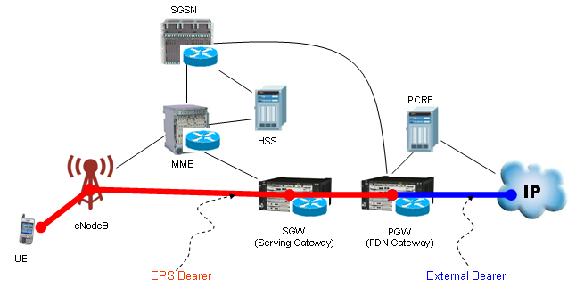
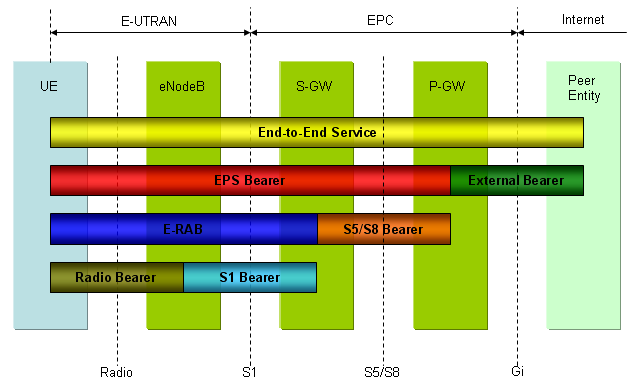

|
LTE Quick Reference Go Back To Index Home : www.sharetechnote.com |
|
|
'Bearer' in the dictionary means "Carrier" or "Porter" which carries something from a point to another point. Under the context of communication technology, I would define the 'Bearer' as a 'pipe line' connecting two or more points in the communication system in which data traffic follow through. Taking this definition, we can define 'EPS Bearer' as a pipe line through which data traffic flows within EPS (Evolved Packet switched System). EPS Bearer can be illustrated as the Red path in the following illustration.

As shown above, EPS bearer has several components in it. It means EPS beare is a complex of multiple element bearers as in the following diagram.

It would seem to be a simple diagram, but as you see EPS bearer includes all the components from Radio Link to the final packet core. It means understanding EPS bearer means understanding the whole LTE network. I would leave it up to you to study the very details of each component.
If you have any experience or knowledge on the other technology like WCDMA, you can think of EPS Bearer as an entity similar to WCDMA PS Bearer.
If you see the diagram shown above, you would notice that this bearer has two main part. One is 'Radio Bearer' and the other part is Core network bearer. In UMTS case, the 'Radio Bearer' part is configured by 'Radio Bearer Setup' message and the Core Network Bearer is configured by Activate PDP Context procedure . In LTE, the both 'Radio Bearer' part and 'Core Network Bearer' both configured by a single message, 'RRC Connection Reconfiguration'. Actually within 'RRC Connection Reconfiguration' message there is one part for Radio configuration and another part for Core Network configuration. See the following two links for the details.
There are two types of EPS Bearer. One is 'Default EPS Bearer' and the other one is 'Dedicated EPS Bearer'. Simply put, we can describe as follows.
i) Default EPS Bearer :
ii) Dedicated EPS Bearer
|